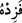

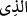


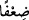
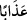
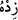
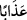
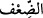
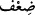
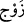
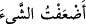
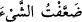
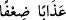

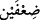
önümüze kim sundu ve bizi doğru yoldan kim saptırdı ise …” şeklinde yorumlanır. “…
onun ateşteki azâbını iki kat artır! derler.” Diğer bir ifâdeyle onun ateşteki azâbını iki
kat yap! Yâni var olan azâbını ikiye katla!
( ) lâfzının (kim .. ise şeklinde) şartıyye olması ve (
) ifâdesinin onun cevabı
olması, yine ( )’in -mübtedâ olarak- (bizim önümüze getirenler var ya, şeklinde)
mahallen merfû olmak sûretiyle (
) mânâsında mevsûle olması ve (
)’nun da haberi
olması mümkündür. İkinci ihtimale göre, (
)’daki ( ), mübtedânın şart mânâsını
tazammun etmesi için ibâreye ziyade edilmiştir.
(
) kelimesi, (
)’in sıfatıdır ve iki kat azap anlamındadır. (
) de (
)’nun
zarfı olup artırmanın nerede olacağını bildirmektedir. Kelimenin (
)’in sıfatı olması
da mümkündür.
Râğıb der ki: (
), kat kat olma anlamı veren kelimelerdendir. Bu tür kat (
) ve
eş (
) gibi kelimeler, birinin bulunması diğerinin de bulunmasını gerektiren
kelimelerdir. (
), eşit orandaki iki şeyin biraraya gelmesi demektir. Sadece sayılarla
ilgili olarak kullanılır. (
) veya (
) dendiği zaman, “o şeye bir
mislini veya daha fazlasını ekledim” anlamına gelir. Buna göre (
) ifâdesi, (
) yâni kat kat azap demektir. Bu da mezkûr azâbın bir kat daha artırılmasıyla
gerçekleşir. Böylece azap iki kat olmuş olur. Çünkü bir şeyin (
)’ı ve (
)’i (bir
katı ve iki katı) iki misli demektir. Bu da “Ey Rabbimiz! Onlara iki kat azap ver ve
onları büyük bir lânete uğrat” (el-Ahzâb 33/68) ifâdesine benzer.
Şayet, azap miktarı kişinin hak ettiği miktar kadarsa bunun arttırılması uygun olmaz;
yok eğer istihkak miktarından fazla ise bu durumda da zulüm olur. Kıyamet günü Allah
Teâlâ’dan böyle bir şeyin talep edilmesi nasıl mümkün olur? dersen, cevaben şöyle
derim: Azabın iki kat arttırılması talebi, istihkak miktarıncadır. Şöyle ki, talep edilen iki
kat azâbın bir katı “sapıtma”, diğer katı ise “saptırma” karşılığıdır.
Hz. Peygamber (s.a.) şöyle buyurmuştur: “Kim kötü bir çığır açarsa hem onun
günahı hem de onunla amel edenlerin günahı kıyamete kadar o çığırı açanın üzerine
olur.”[39] Bunun bir benzeri de şudur: Diyelim ki iki kâfirden biri adam öldürdü diğeri
de zinâ etti. Her ikisi de küfür günahında eşittir. Ama adam öldürme ve zinâ etmenin
cezâsında ise işlenen kötü fiilin durumuna göre karşılığı kat kat olur.
İbn Mes’ûd (r.a.) der ki: Kat kat azap, yılan ve çıyan gibi hayvanlardır. Zira saptıran
(mudıll) saptırdığı kimsenin ruhuna daha dünyada iken eziyet verir. Bu yüzden Allah
Teâlâ da âhirette eziyet verici bu hayvanları ona musallat eder. Zira amellerin karşılığı
da kendi cinsinden olur.
Akıllı bir kimseye gereken hem zâhirini ve hem de bâtınını ıslah etmektir. Böyle bir
kimsenin kötü ahlâk ve çirkin sıfatlardan temizlenmesi (tezkiye), kötü söz ve çirkin
amellerden kaçınması (tahliye) gerekir. Ayrıca kötü arkadaşlarını da terk etmelidir. Zira
kötü arkadaş kişiyi âhirette dostluk ve güzelliklerden mahrum kılar. O gün hiçbir